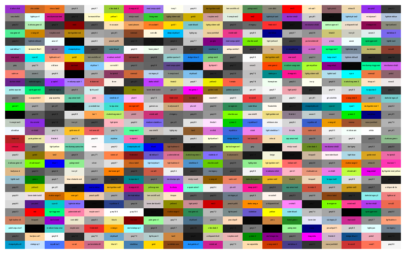
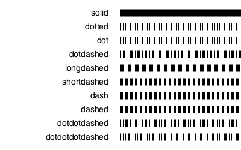
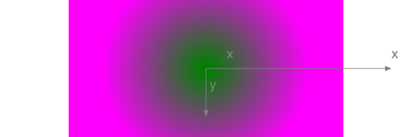
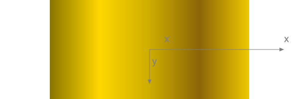

Styling
Color and opacity
For color definitions and conversions, you can use Colors.jl.
setcolor() and sethue() apply a single solid or transparent color to shapes. setblend() applies a smooth transition between two or more colors.
The difference between the setcolor() and sethue() functions is that sethue() is independent of alpha opacity, so you can change the hue without changing the current opacity value.
Named colors, such as "gold", or "lavender", can be found in Colors.color_names. This code shows the first 600 colors.
origin()
cols = collect(Colors.color_names)
tiles = Tiler(800, 500, 30, 20)
for (pos, n) in tiles
sethue(cols[n][1])
box(pos, tiles.tilewidth, tiles.tileheight, :fill)
sethue("black")
text(string(cols[n][1]), pos, halign=:center)
end
Luxor.sethue — Function.sethue("black")
sethue(0.3,0.7,0.9)Set the color without changing opacity.
sethue() is like setcolor(), but we sometimes want to change the current 'color' without changing alpha/opacity. Using sethue() rather than setcolor() doesn't change the current alpha opacity.
sethue(col::ColorTypes.Colorant)Set the color without changing current opacity:
sethue(0.3, 0.7, 0.9)Set the color's r, g, b values. Use setcolor(r,g,b,a) to set transparent colors.
Luxor.setcolor — Function.setcolor("gold")
setcolor("darkturquoise")Set the current color to a named color. This use the definitions in Colors.jl to convert a string to RGBA eg setcolor("gold") # or "green", "darkturquoise", "lavender", etc. The list is at Colors.color_names.
Use sethue() for changing colors without changing current opacity level.
sethue() and setcolor() return the three or four values that were used:
julia> setcolor(sethue("red")..., .8)
(1.0,0.0,0.0,0.8)
julia> sethue(setcolor("red")[1:3]...)
(1.0,0.0,0.0)setcolor(r, g, b)
setcolor(r, g, b, alpha)
setcolor(color)
setcolor(col::ColorTypes.Colorant)Set the current color.
Examples:
setcolor(convert(Colors.HSV, Colors.RGB(0.5, 1, 1)))
setcolor(.2, .3, .4, .5)
setcolor(convert(Colors.HSV, Colors.RGB(0.5, 1, 1)))
for i in 1:15:360
setcolor(convert(Colors.RGB, Colors.HSV(i, 1, 1)))
...
endLuxor.setblend — Function.setblend(blend)Start using the named blend for filling graphics.
This aligns the original coordinates of the blend definition with the current axes.
Luxor.setopacity — Function.setopacity(alpha)Set the current opacity to a value between 0 and 1. This modifies the alpha value of the current color.
Luxor.randomhue — Function.randomhue()Set a random hue.
Choose a random color without changing the current alpha opacity.
Luxor.randomcolor — Function.randomcolor()Set a random color. This may change the current alpha opacity too.
Line styles
The set- functions control subsequent lines' width, end shapes, join behavior, and dash pattern:
for l in 1:3
sethue("black")
setline(20)
setlinecap(["butt", "square", "round"][l])
textcentred(["butt", "square", "round"][l], 80l, 80)
setlinejoin(["round", "miter", "bevel"][l])
textcentred(["round", "miter", "bevel"][l], 80l, 120)
poly(ngon(Point(80l, 0), 20, 3, 0, vertices=true), :strokepreserve, close=false)
sethue("white")
setline(1)
stroke()
end
setline(12)
patterns = ["solid", "dotted", "dot", "dotdashed", "longdashed",
"shortdashed", "dash", "dashed", "dotdotdashed", "dotdotdotdashed"]
tiles = Tiler(400, 250, 10, 1, margin=10)
for (pos, n) in tiles
setdash(patterns[n])
textright(patterns[n], pos.x - 20, pos.y + 4)
line(pos, Point(400, pos.y), :stroke)
end
Luxor.setline — Function.setline(n)Set the line width.
Luxor.setlinecap — Function.setlinecap(s)Set the line ends. s can be "butt" (the default), "square", or "round".
Luxor.setlinejoin — Function.setlinejoin("miter")
setlinejoin("round")
setlinejoin("bevel")Set the line join style, or how to render the junction of two lines when stroking.
Luxor.setdash — Function.setlinedash("dot")Set the dash pattern to one of: "solid", "dotted", "dot", "dotdashed", "longdashed", "shortdashed", "dash", "dashed", "dotdotdashed", "dotdotdotdashed"
Luxor.fillstroke — Function.fillstroke()Fill and stroke the current path.
Luxor.stroke — Function.stroke()Stroke the current path with the current line width, line join, line cap, and dash settings. The current path is then cleared.
Base.fill — Function.fill()Fill the current path with current settings. The current path is then cleared.
Luxor.strokepreserve — Function.strokepreserve()Stroke the current path with current line width, line join, line cap, and dash settings, but then keep the path current.
Luxor.fillpreserve — Function.fillpreserve()Fill the current path with current settings, but then keep the path current.
Luxor.paint — Function.paint()Paint the current clip region with the current settings.
Luxor.do_action — Function.do_action(action)This is usually called by other graphics functions. Actions for graphics commands include :fill, :stroke, :clip, :fillstroke, :fillpreserve, :strokepreserve, :none, and :path.
Blends
A blend is a color gradient. Use setblend() to select a blend in the same way that you'd use setcolor() and sethue() to select a solid color.
You can make linear or radial blends. Use blend() in either case.
To create a simple linear blend between two colors, supply two points and two colors to blend():
orangeblue = blend(Point(-200, 0), Point(200, 0), "orange", "blue")
setblend(orangeblue)
box(O, 400, 100, :fill)
axes()And for a radial blend, provide two point/radius pairs, and two colors:
greenmagenta = blend(Point(0, 0), 5, Point(0, 0), 150, "green", "magenta")
setblend(greenmagenta)
box(O, 400, 200, :fill)
axes()
You can also use blend() to create an empty blend. Then you use addstop() to define the locations of specific colors along the blend, where 0 is the start, and 1 is the end.
goldblend = blend(Point(-200, 0), Point(200, 0))
addstop(goldblend, 0.0, "gold4")
addstop(goldblend, 0.25, "gold1")
addstop(goldblend, 0.5, "gold3")
addstop(goldblend, 0.75, "darkgoldenrod4")
addstop(goldblend, 1.0, "gold2")
setblend(goldblend)
box(O, 400, 200, :fill)
axes()
When you define blends, the location of the axes (eg the current workspace as defined by translate(), etc.), is important. In the first of the two following examples, the blend is selected before the axes are moved with translate(pos). The blend 'samples' the original location of the blend's definition.
goldblend = blend(Point(0, 0), Point(200, 0))
addstop(goldblend, 0.0, "gold4")
addstop(goldblend, 0.25, "gold1")
addstop(goldblend, 0.5, "gold3")
addstop(goldblend, 0.75, "darkgoldenrod4")
addstop(goldblend, 1.0, "gold2")
setblend(goldblend)
tiles = Tiler(600, 200, 1, 5, margin=10)
for (pos, n) in tiles
gsave()
setblend(goldblend)
translate(pos)
ellipse(O, tiles.tilewidth, tiles.tilewidth, :fill)
grestore()
end
Outside the range of the original blend's definition, the same color is used, no matter how far away from the origin you go (there are Cairo options to change this). But in the next example, the blend is relocated to the current axes, which have just been moved to the center of the tile. The blend refers to 0/0 each time, which is at the center of shape.
goldblend = blend(Point(0, 0), Point(200, 0))
addstop(goldblend, 0.0, "gold4")
addstop(goldblend, 0.25, "gold1")
addstop(goldblend, 0.5, "gold3")
addstop(goldblend, 0.75, "darkgoldenrod4")
addstop(goldblend, 1.0, "gold2")
setblend(goldblend)
tiles = Tiler(600, 200, 1, 5, margin=10)
for (pos, n) in tiles
gsave()
translate(pos)
setblend(goldblend)
ellipse(O, tiles.tilewidth, tiles.tilewidth, :fill)
grestore()
end
Luxor.blend — Function.blend(from::Point, to::Point)Create an empty linear blend.
A blend is a specification of how one color changes into another. Linear blends are defined by two points: parallel lines through these points define the start and stop locations of the blend. The blend is defined relative to the current axes origin. This means that you should be aware of the current axes when you define blends, and when you use them.
To add colors, use addstop().
blend(centerpos1, rad1, centerpos2, rad2, color1, color2)Create a radial blend.
Example:
redblue = blend(
pos, 0, # first circle center and radius
pos, tiles.tilewidth/2, # second circle center and radius
"red",
"blue"
)blend(pt1::Point, pt2::Point, color1, color2)Create a linear blend.
Example:
redblue = blend(pos, pos, "red", "blue")blend(from::Point, startradius, to::Point, endradius)Create an empty radial blend.
Radial blends are defined by two circles that define the start and stop locations. The first point is the center of the start circle, the first radius is the radius of the first circle.
A new blend is empty. To add colors, use addstop().
Luxor.addstop — Function.addstop(b::Blend, offset, col)
addstop(b::Blend, offset, (r, g, b, a))
addstop(b::Blend, offset, string)Add a color stop to a blend. The offset specifies the location along the blend's 'control vector', which varies between 0 (beginning of the blend) and 1 (end of the blend). For linear blends, the control vector is from the start point to the end point. For radial blends, the control vector is from any point on the start circle, to the corresponding point on the end circle.
Example:
blendredblue = blend(Point(0, 0), 0, Point(0, 0), 1)
addstop(blendredblue, 0, setcolor(sethue("red")..., .2))
addstop(blendredblue, 1, setcolor(sethue("blue")..., .2))
addstop(blendredblue, 0.5, sethue(randomhue()...))
addstop(blendredblue, 0.5, setcolor(randomcolor()...))Using blendadjust()
You can use blendadjust() to modify the blend so that objects scaled and positioned after the blend was defined are rendered correctly.
setline(20)
# first line
blendgoldmagenta = blend(Point(-100, 0), Point(100, 0), "gold", "magenta")
setblend(blendgoldmagenta)
line(Point(-100, -50), Point(100, -50))
stroke()
# second line
blendadjust(blendgoldmagenta, Point(50, 0), 0.5, 0.5)
line(O, Point(100, 0))
stroke()
# third line
blendadjust(blendgoldmagenta, Point(-50, 50), 0.5, 0.5)
line(Point(-100, 50), Point(0, 50))
stroke()
# fourth line
gsave()
translate(0, 100)
scale(0.5, 0.5)
setblend(blendgoldmagenta)
line(Point(-100, 0), Point(100, 0))
stroke()
grestore()
The blend is defined to span 200 units, horizontally centered at 0/0. The top line is also 200 units long and centered horizontally at 0/0, so the blend is rendered exactly as you'd hope.
The second line is only half as long, at 100 units, centered at 50/0, so blendadjust() is used to relocate the blend's center to the point 50/0 and scale it by 0.5 (100/200).
The third line is also 100 units long, centered at -50/0, so again blendadjust() is used to relocate the blend's center and scale it.
The fourth line shows that you can translate and scale the axes instead of adjusting the blend, if you use setblend() again in the new scene.
Luxor.blendadjust — Function.blendadjust(ablend, center::Point, xscale, yscale, rot=0)Modify an existing blend by scaling, translating, and rotating it so that it will fill a shape properly even if the position of the shape is nowhere near the original location of the blend's definition.
For example, if your blend definition was this (notice the 1)
blendgoldmagenta = blend(
Point(0, 0), 0, # first circle center and radius
Point(0, 0), 1, # second circle center and radius
"gold",
"magenta"
)you can use it in a shape that's 100 units across and centered at pos, by calling this:
blendadjust(blendgoldmagenta, Point(pos.x, pos.y), 100, 100)then use setblend():
setblend(blendgoldmagenta)